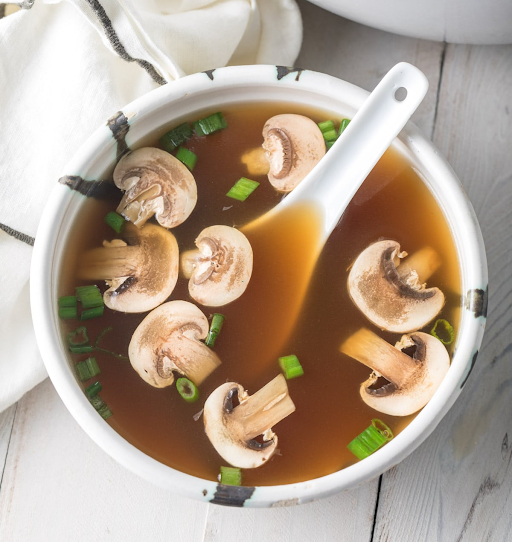

Main
Food
My Favorite Food
My two most favourite foods are Noodles and Soup. Especially, when they are combined into noodle soup. My favourite type of noodles are Vegetarian Hakka Noodles and my favourite types of soup are Mushroom, Sweet Corn, and Hot And Sour soup.
